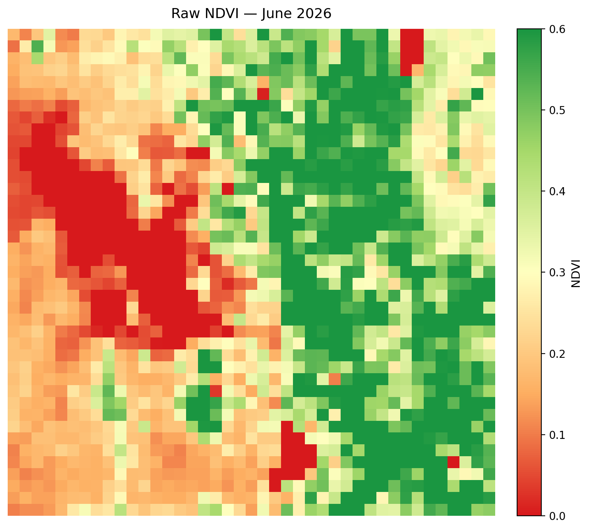
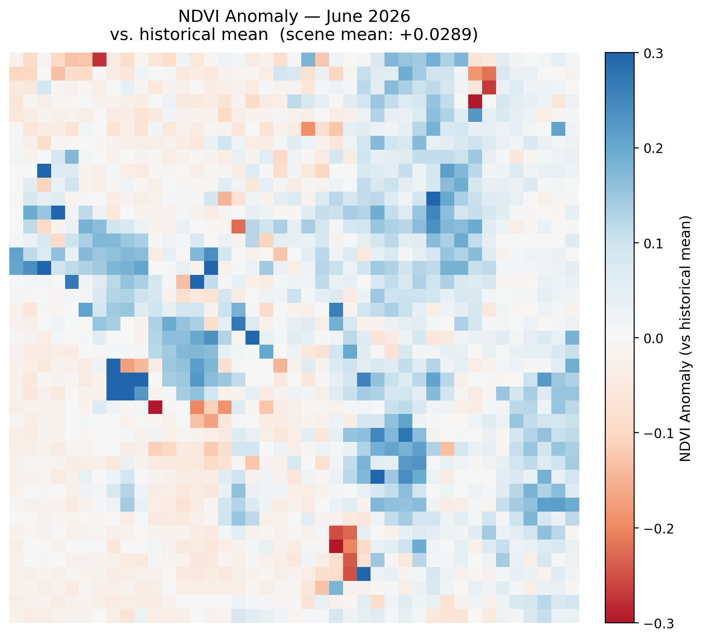
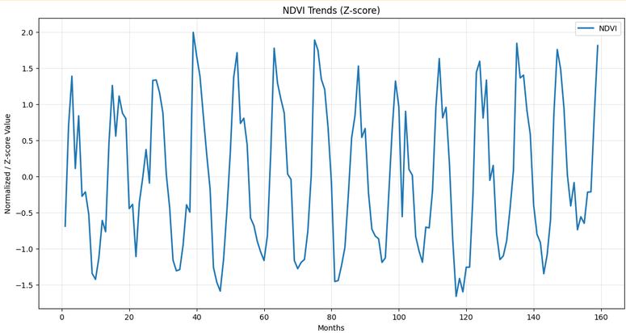
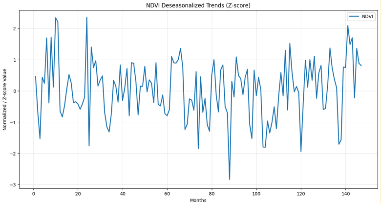
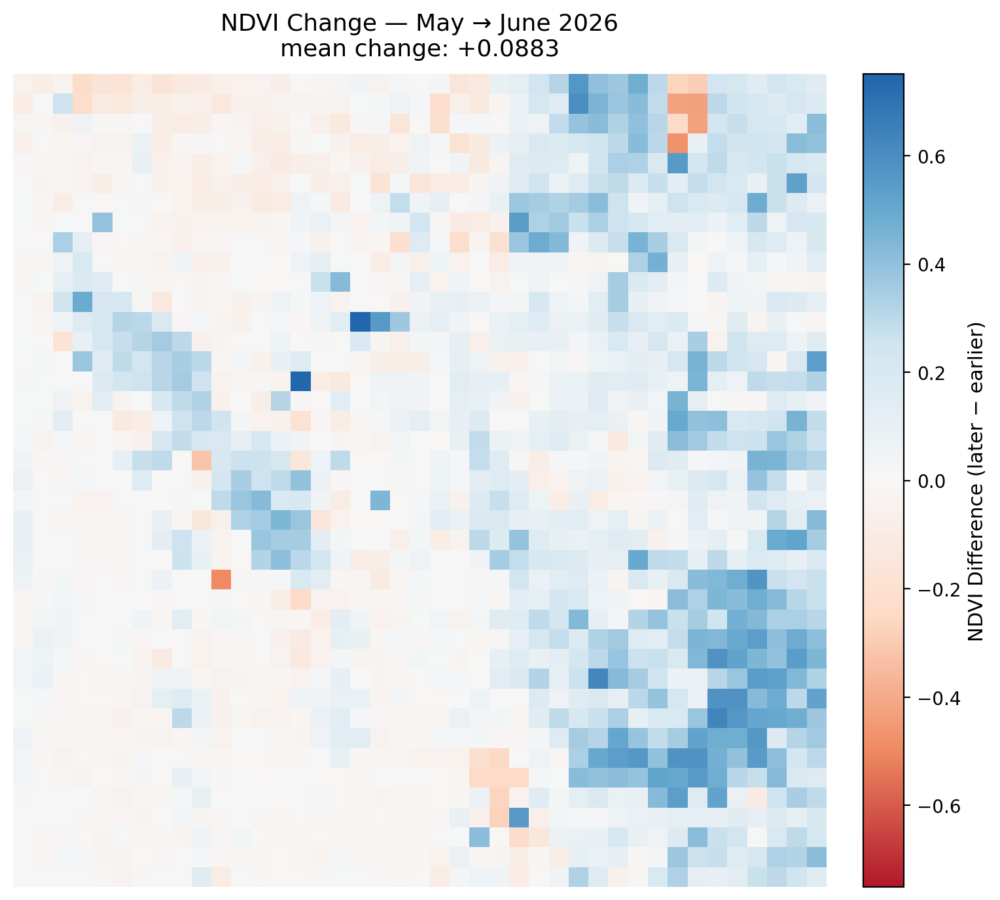
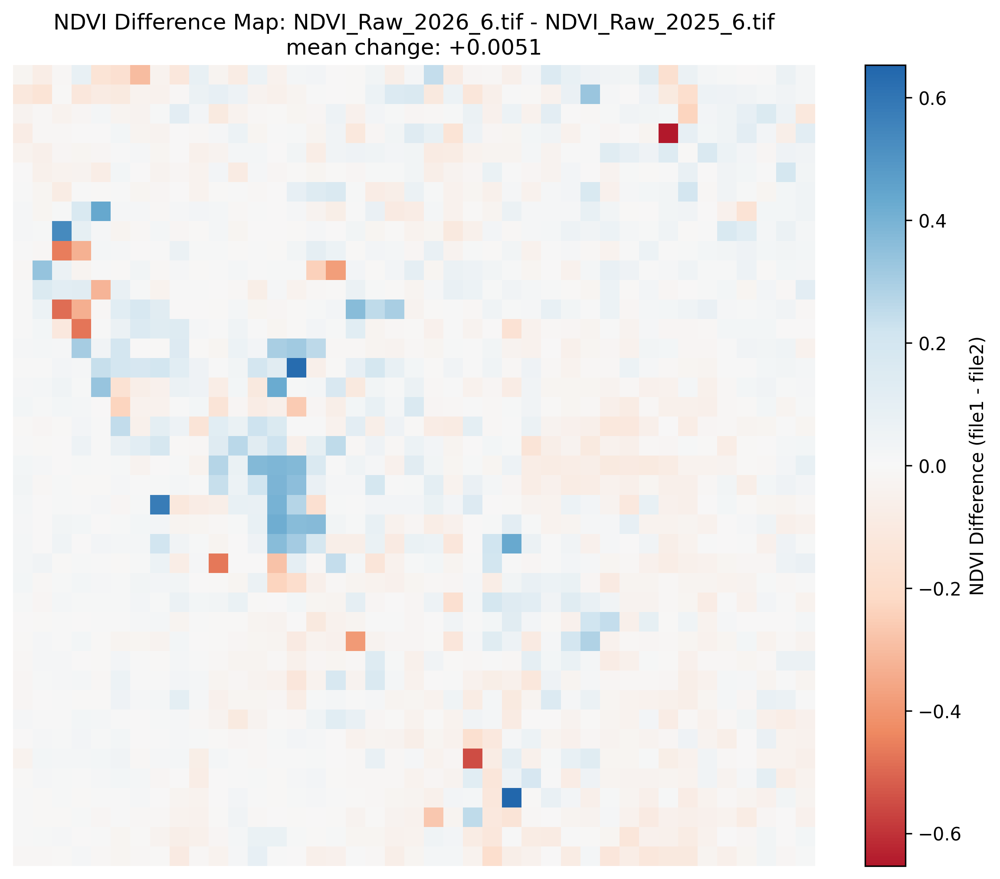

Monthly Report · Issue 07
June 2026
Vegetation dynamics across the Wasatch Front
By Scott Vars
Published July 11, 2026
Vegetation dynamics across the Wasatch Front
By Scott Vars
Published July 11, 2026
This map shows the raw vegetation index across the Wasatch Front for June 2026. The scene has a big sharp east–west divide: the eastern half is mostly green pixels in the 0.4–0.6 range, reflecting the fully leafed-out Wasatch mountains, while the western half sits much lower in the 0.0–0.2 range across the desert and urban Salt Lake Valley. The lake values (Great Salt Lake and Utah Lake) sit at 0, as normal. Compared to May, the mountainous east has continued to fill in, and we are now looking at a quite healthy and nominal early-summer vegetation signal near its seasonal peak.

NDVI was somewhat above average for June 2026, with a scene-mean anomaly of about +0.0289 relative to the historical June mean. This is a net-positive signal, showing vegetation that is a little healthier than a typical June, though the increase is smaller and less uniform than what we saw in May. The gains are mostly across the vegetated eastern half of the Front and scattered through the central mountains, with a handful of red patches mixed in. Because this map is z-scored, the seasonal green-up signal is effectively stripped out, so the positive anomaly shows genuinely healthy vegetation rather than simply the time of year (which would be the case if we were comparing it to previous months, for example). Overall, June continues the healthy trajectory established in May, if at a more moderate pace.
A mild but genuine net increase over the historical June mean, showing healthy vegetation as we head into peak summer, though the anomaly is more moderate than May's.

Looking at the updated NDVI trends, June 2026 sits right near the seasonal peak, which is exactly what we expect for this time of year. June is near the top of the current year's wave, showing that the green-up season is basically done and vegetation should now hold near peak before beginning its seasonal decline through late summer, likely starting in August. The deseasonalized graph, which strips out the annual cycle to isolate the underlying trend, shows June landing slightly above the baseline which is consistent with the slight positive anomaly seen above. Overall, this is typical June behavior with a healthy underlying signal. Nothing really more to say.


NDVI increased overall from May to June, with a mean change of +0.0883 across the Wasatch Front region. This is a solid gain, though smaller than the very large April to May green-up, which is expected as vegetation approaches the summer peak and the rate of growth slows. The increase is mostly in the eastern mountains, where the clusters of blue show the continued filling-in of the forest canopy, while the western desert and valley stayed mostly flat. This reflects the tail end of the green-up finishing off in high altitude. Aside from a few scattered red pixels, virtually the entire vegetated half of the Front continued to gain. Overall, everything looks nominal for June.

Any sharp isolated changes over the open water of the Great Salt Lake, Bear Lake, or Utah Lake are likely remote sensing artifacts and should be disregarded. They are generally not real readings — when cross-checked against the raw NDVI maps, the lake pixels did not meaningfully change.
Compared to June 2025, there is essentially no meaningful change in vegetation, with a mean change of only +0.0051. The scene shows as a fairly even mix of small increases and small decreases, with no dominant direction and only a few isolated strong pixels either way. This indicates a stable, stagnant year-over-year picture: June 2025 and June 2026 produced very similar vegetation responses. Combined with the modest positive anomaly this month, we see that the healthy conditions observed a year ago have carried forward, continuing the trend into 2026.

The June 2026 Wasatch Watch report tells a story of a healthy vegetation season settling into its summer peak. Month-over-month, NDVI increased by a mean of +0.0883 from May to June which is a solid gain, though more moderate than the large April→May green-up, as the rate of growth naturally slows near peak. The gains were concentrated in the eastern Wasatch mountains, finishing off the high-country canopy, while the western desert and valley stayed flat. The trends graphs confirm this is typical June behavior, with the seasonal cycle near its crest and the deseasonalized signal sitting slightly above baseline.
The seasonal anomaly map reinforces a mildly positive picture: June 2026 sits about +0.0289 above the historical June mean, a genuine but modest signal of above-average vegetation health once the green-up is stripped out by z-scoring. Year-over-year, June 2026 is essentially flat compared to June 2025, with a mean change of only +0.0051, indicating that both years produced a very similar vegetation response and that the healthy conditions seen in 2025 have continued into 2026. Taken together, the Front enters mid-summer with mature, healthy vegetation and no signs of distress.
NDVI values derived from Landsat 8 TOA median composites at 5.5km resolution. Difference maps computed from raw NDVI prior to any normalization. Historical comparisons use the 2013–2026 Landsat archive.
Landsat 8/9 imagery courtesy of the U.S. Geological Survey via Google Earth Engine.
NOAA National Centers for Environmental Information, Monthly Climate Reports and drought summaries.